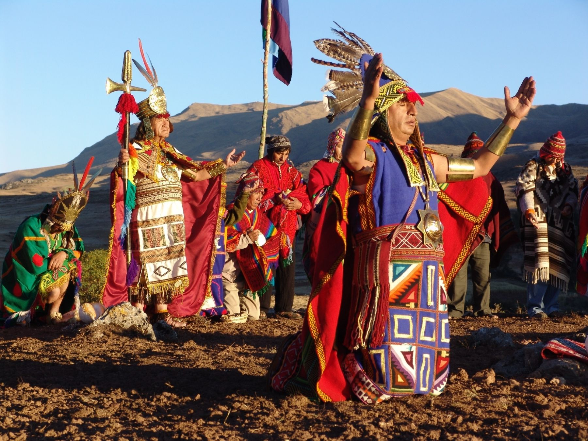

Geography
Peru is the third largest country in South America, after Brazil and Argentina. It is made up of a variety of landscapes, from mountains and beaches to deserts and rain forests. Most people live along the coast of the Pacific Ocean, where the capital, Lima, is located.
The world's largest rain forest, the Amazon, covers nearly half of Peru. Called the selva in Spanish, this huge jungle, which also covers half of Brazil, is home to plants and animals that do not live anywhere else on Earth. Some scientists think there may even be Indian tribes there that have never seen the outside world.
The second highest mountain range in the world runs through Peru. These peaks, called the Andes, are so tall and forbidding that the ancient Inca people thought they were gods. They run from north to south and can be seen from Peru's beaches 50 miles (80 kilometers) to the west. The highest peak, Mount Huascarán, is 22,205 feet (6,768 meters) high.
People and Culture
The people of Peru are a mix of many different cultures, including Indians, Spaniards and other Europeans, descendants of African slaves, and Asians. Until recently, most people lived in the countryside. But now, more than 70 percent live in cities. Most Peruvians follow the Catholic religion introduced by the Spanish.
Nature
Because it has so many different ecosystems, Peru is home to a wider variety of plants and animals than most other countries on Earth. For many reasons, Peruvians have not had as much of an impact on their natural world as many other countries, and much of these ecosystems have been undisturbed.
A 250-acre (100-hectare) plot of Peruvian rain forest is home to more than 6,000 kinds of plants! There are hundreds of species that are only found in the Amazon. To protect these plants and animals, Peru has created special forest areas called reserves.
On the Pacific Coast, many interesting plant and animal species have adapted to the dry desert climate. And off the coast, the Peru Current nourishes huge numbers of small fish, which in turn support large populations of bigger fish and seabirds, including Humboldt penguins.
Peru's mountains support special types of grasses and plants, which provide food for mammals like llamas, alpacas, and vicuñas. One plant that grows in the Andes, the puya raimondi, grows for a hundred years before blooming.
History
Peru is an ancient country. The earliest inhabitants arrived there about 15,000 years ago. Societies emerged on the west coast more than 5,000 years ago and began to spread inland. These included the Chavín, the Moche, and the Nasca.
 Peruvian Incas.One of the most important Peruvian cultures was the Inca, who lived in Peru around 600 years ago. Their capital, Cusco, is still a major city today. The Inca also built Machu Picchu, a famous and mysterious ancient city in the Andes. They thrived for centuries before being conquered by the Spanish in 1532.
Languages: